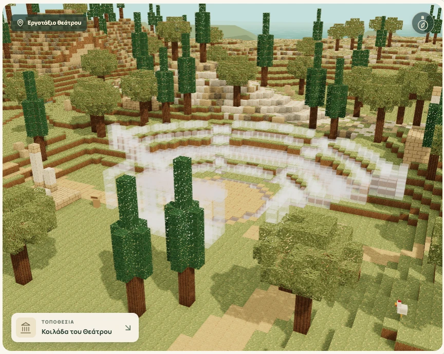

Ένα ολόκληρο νησί
Λόφοι, ελαιώνες, ένα ρέμα με πέτρινες γέφυρες κι ένας αρχαίος δρόμος που ενώνει τους χώρους. Ορόσημα και μια ερμαϊκή στήλη δείχνουν τον δρόμο.
Κύβος + πόλις. Παίζεται δωρεάν σε υπολογιστή και tablet, χωρίς εγκατάσταση.
Ένα νησί της αρχαίας Ελλάδας σε περιμένει. Μάζεψε ξύλο, πέτρα και πηλό, φτιάξε τα εργαλεία σου και ακολούθησε τον αρχαίο δρόμο από το θέατρο ως το ιερό, την αγορά και το στάδιο. Κάθε οικοδόμημα το στήνεις εσύ, κύβο κύβο, και μαθαίνεις την ιστορία του όσο χτίζεις.

Μια πρωτοβουλία του Σωματείου «ΔΙΑΖΩΜΑ» και της Θερμοκοιτίδας DHUB.
Το παιχνίδι
Λόφοι, ελαιώνες, ένα ρέμα με πέτρινες γέφυρες κι ένας αρχαίος δρόμος που ενώνει τους χώρους. Ορόσημα και μια ερμαϊκή στήλη δείχνουν τον δρόμο.
Κόψε ξύλο ελιάς, φτιάξε εργαλεία στο εργαστήριο, ψήσε πηλό σε κεραμίδια στο καμίνι και κάνε μπρούντζο από χαλκό και κασσίτερο. Τα εργαλεία φθείρονται, κι έτσι φτιάχνεις καλύτερα.
Στο σημάδι κάθε χώρου ενεργοποιείς το σχέδιο. Φωτεινοί κύβοι-οδηγοί δείχνουν πού μπαίνει κάθε κύβος. Δεν υπάρχουν έτοιμα κομμάτια.
Το νερό τρέχει στις πλαγιές και γεμίζει τα κοιλώματα. Μετέφερέ το με την υδρία, το πήλινο σταμνί της αρχαιότητας.
Η μέρα γίνεται νύχτα, οι λυχνοστάτες φωτίζουν τα εργοτάξια, και πρόβατα, κατσίκες και κότες βόσκουν στα λιβάδια.
Έως πέντε φίλοι ή μια ομάδα της τάξης μπαίνουν στο ίδιο νησί και χτίζουν μαζί.
Όλα τα υλικά στο σακίδιο, κύβοι που δεν τελειώνουν, άμεσο σπάσιμο και πτήση. Ιδανική για την τάξη.
Σύντομες ιστορικές σημειώσεις εμφανίζονται την ώρα που τις χρειάζεσαι και μένουν στο ημερολόγιό σου.
Ο κόσμος
Όλο το νησί είναι φτιαγμένο από κύβους: μπορείς να σκάψεις, να κόψεις και να χτίσεις παντού. Κάθε υλικό έχει τον τόπο του, και κάθε τόπος κρύβει κάτι που θα χρειαστείς.
Ο αρχαίος δρόμος ξεκινά από το θέατρο και οδηγεί στους χώρους των επόμενων οικοδομημάτων.
Πώς παίζεται
Συλλογή υλικών για την πλήρη εμπειρία ή δημιουργικό για γρήγορο χτίσιμο. Αλλάζει όποτε θέλεις.
Ξεκίνα από μια ελιά. Ο οδηγός «Πρώτα βήματα» σε βοηθά να φτιάξεις τα πρώτα σου εργαλεία.
Στο σημάδι του χώρου ενεργοποίησε το σχέδιο και ακολούθησε τους φωτεινούς κύβους.
Με κάθε οικοδόμημα έτοιμο, ο αρχαίος δρόμος σε οδηγεί στο επόμενο.
WASD για κίνηση, ποντίκι για ματιά. Αριστερό κλικ σπάει, δεξί κλικ τοποθετεί. E για το σακίδιο, B για το σχέδιο από ψηλά, V για πρώτο ή τρίτο πρόσωπο.
Κουμπιά κατεύθυνσης και άλματος, σύρε για να κοιτάξεις, κουμπί αξίνας για σπάσιμο και + για τοποθέτηση. Τσίμπημα για ζουμ στο σχέδιο.
Τα μνημεία
Το θέατρο χτίζεται ήδη. Το ιερό, η αγορά και το στάδιο έχουν τη θέση τους στο νησί και ανοίγουν το ένα μετά το άλλο.
Ορχήστρα, πρώτη σειρά εδωλίων, κοίλον, κλίμακες, σκηνή και πάροδοι: 332 κύβοι σε εννέα αποστολές, με ξενάγηση στο τέλος.
Ένας μικρός δωρικός ναός και ο βωμός του, δίπλα στο θέατρο.
Μια στοά και μια κρήνη με τρεχούμενο νερό.
Ο δρόμος του αγώνα και οι πλαγιές των θεατών.
Για σχολεία
Το KivoPolis φτιάχτηκε για να γνωρίζουν οι μαθητές τα αρχαία οικοδομήματα, τα μέρη και τα υλικά τους, χτίζοντάς τα. Η δημιουργική λειτουργία αφήνει την ομάδα να εστιάσει στο σχέδιο και στην ιστορία.
Άνοιξε το παιχνίδι στον browser σου, πάρε το πρώτο κούτσουρο ελιάς και ακολούθησε τον αρχαίο δρόμο.
Παίξε τώρα